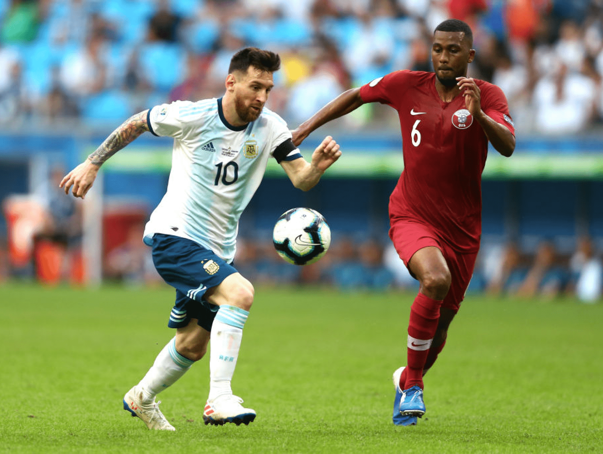

All Highlights
Copa America 2021
Amet minim mollit non deserunt ullamco est sit aliqua dolor do amet sint. Velit officia consequat duis enim velit mollit. Exercitation veniam consequat sunt nostrud amet.
